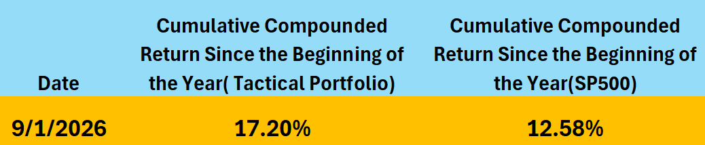

Correia Investment Solutions is a financial analysis and education platform built for self-directed investors who want to make smarter, more informed decisions about their money. Whether you are building toward retirement, evaluating investment opportunities, or trying to understand where you stand financially, this site gives you three things: AI-driven stock analysis across S&P 500 companies, two actively managed model portfolios you can follow and replicate, and a retirement planning tool that lets you stress-test your financial future across multiple scenarios.
Explore AI-generated price predictions for S&P 500 companies built on fundamental analysis — net income, margins, ROE, ROA, valuation ratios, and more. Compare predicted versus actual prices and see where the model sees opportunity ahead.
Follow two distinct strategies — a quarterly fundamental portfolio selected through deep quantitative screening, and a tactical rotation portfolio that refreshes every two to four weeks to adapt to shifting market dynamics. Use the built-in calculators to size your positions.
Download our Excel-based planning workbook to model your financial future. Run Monte Carlo simulations to find your earliest viable retirement age, determine how much you need to save, and stress-test your plan against major life expenses — all in one flexible, scenario-driven tool.
Getting started is straightforward. You do not need a specific brokerage — the analysis and tools here work with any platform, whether that is Schwab, Fidelity, Interactive Brokers, Morgan Stanley, or any other. What matters is understanding the two account types available to you: taxable brokerage accounts where gains are subject to annual taxation, and deferred tax retirement accounts such as IRAs and 401(k)s where your investments grow tax-free until withdrawal. Knowing how to use both strategically is one of the most powerful advantages any investor can have — and this site is here to help you do exactly that.
Expand your financial knowledge with our YouTube channel — featuring in-depth videos on investing strategies, financial analysis, and market insights to help you make more informed investment decisions.
Visit Our YouTube Channel →Ask detailed financial questions using structured prompts powered by AI. Enter your question below and generate a professional-grade prompt you can use in ChatGPT.
The results displayed below are generated by a proprietary AI model built on the principles of fundamental analysis, trained and evaluated on quarterly financial data from S&P 500 companies. The model incorporates a comprehensive set of financial variables including net income, sales and revenue, gross and net margins, return on assets (ROA), return on equity (ROE), capital expenditures, and research and development investments — along with the three-year rate of change for each of these metrics to capture meaningful trends over time. Valuation multiples such as price-to-earnings (PE) and price-to-sales (PS) ratios are also factored in, alongside industry-level rankings and cross-industry comparisons to contextualize each company's relative financial standing. In addition to these fundamental inputs, the model employs a Cash Flow to Equity (FCFE) valuation framework combined with Monte Carlo simulations to generate probabilistic estimates of future price levels, accounting for uncertainty across a range of possible outcomes. Two forward-looking price targets are produced for each security: Horizon 1 (H1), which looks approximately 3 months ahead, and Horizon 2 (H2), which extends to roughly 6 months — both measured from an entry point that falls approximately 2 months after the official close of each quarterly reporting period. The charts below visualize how closely the model's predictions aligned with actual realized prices in historical periods, and include a confidence band representing one standard deviation around the predicted values to illustrate the range of expected outcomes. For the most recent quarters, the charts also project what the model anticipates for future price levels, offering a forward-looking perspective grounded in rigorous quantitative analysis.
The securities listed below represent our current selections derived from the AI-driven fundamental analysis model. These picks have been evaluated across all key financial metrics and are intended to be held throughout the second quarter. Each selection reflects a high-conviction opportunity identified through the model's rigorous quantitative screening process.
Calculate the number of shares to purchase for each Q3 fundamental pick based on an optimized distribution of your equity allocation.
The portfolios displayed below are constructed using a sophisticated combination of technical indicators and macroeconomic variables, layered on top of a purpose-built AI model designed to optimize portfolio performance over a rolling two-to-four week forward horizon. The strategy draws from a broad set of macroeconomic signals — including interest rates, inflation trends, economic growth indicators, and sector rotation dynamics — alongside technical signals such as momentum, moving averages, and volatility measures, to identify the most favorable asset allocations at any given point in time. While the core universe of securities analyzed consists of S&P 500 companies, making the S&P 500 index the natural performance benchmark, the portfolio also extends its reach into other asset classes including commodities and international equity regions, with the objective of reducing overall portfolio volatility while simultaneously enhancing returns through broader diversification. The strategy seeks to improve risk-adjusted outcomes relative to a SP500 benchmark by combining technical, macroeconomic, and quantitative signals, and capitalizing on short-to-medium term mispricings and momentum opportunities that traditional passive strategies are unable to exploit. To achieve this, portfolio allocations are actively reviewed and rebalanced on a monthly basis, ensuring that the weightings remain aligned with the latest signals produced by the AI model and reflect any meaningful shifts in the underlying macroeconomic or technical landscape. This disciplined, data-driven approach to portfolio construction seeks to deliver consistent outperformance while maintaining a clear and transparent framework that investors can follow and understand.
Returns - YTD — September 1, 2026

Performance Disclosure: The benchmark used for comparison is the S&P 500 index. Returns shown reflect price performance only and do not include dividends. Transaction costs are not included in the performance figures — while they would apply in practice, they are expected to be negligible relative to overall returns. Tax implications are not reflected in the results shown — taxes would not apply within qualified retirement accounts such as IRAs and 401(k)s, and would vary based on individual tax situations in taxable accounts. Market slippage is not included. All performance figures are calculated using closing prices for each security. Returns are measured for the specific interval periods shown between the dates indicated in the performance sheet. Past performance does not guarantee future results. These figures are provided for informational and educational purposes only and should not be interpreted as a promise or guarantee of future investment returns.
The securities listed below represent our current tactical rotation portfolio — a higher-frequency strategy that refreshes every two to four weeks to adapt to shifting market dynamics, sector momentum, and macroeconomic signals. Unlike the fundamental picks which are held through the quarter, these selections are actively managed to capture short-to-medium term opportunities across equities, commodities, and sector ETFs. Greater portfolio turnover is an intentional feature of this strategy, allowing it to respond more rapidly to changing conditions and reduce exposure to deteriorating trends while rotating into emerging ones.
Calculate the number of shares to purchase for each tactical rotation pick based on an optimized distribution of your equity allocation. This portfolio refreshes every 2 to 4 weeks.
The spreadsheet available for download below is a comprehensive financial planning tool designed to take you from simple to complex financial analysis — giving you a clear picture of where you stand today and what the future may hold based on the specific actions and decisions you make along the way. Built with flexibility at its core, the tool allows you to construct multiple financial scenarios and evaluate how different choices — such as changes in savings rate, continuing to work in a semi or quasi-retired capacity, investment returns, retirement age, or spending habits — can dramatically alter your long-term financial outcomes. Whether you are just starting to plan for retirement or are already in the later stages of your career, the model adapts to your situation and projects forward with precision. It places particular emphasis on the outer years of retirement, where the compounding effects of early decisions become most apparent and where financial security matters most. Beyond the built-in simulations described below, the spreadsheet is fully adjustable and can be tailored to model virtually any financial scenario you can imagine — the inputs, assumptions, and structure are designed to be flexible enough to accommodate unique situations, unconventional retirement paths, and any combination of financial variables that reflect your personal circumstances. Simply input your current financial details, define your assumptions, and let the model do the rest — giving you the clarity and confidence to make better financial decisions today for a more secure tomorrow.
The tool is equally valuable for those who are already in retirement and want to ensure their plan continues to perform as expected. Post-retirement planning introduces a different but equally important set of questions — whether your portfolio is sustaining your lifestyle at the pace you projected, whether you can absorb unexpected expenses without derailing your long-term security, and whether you remain on track to meet legacy goals such as leaving a defined amount of wealth behind for your family or a cause you care about. The model allows you to continuously re-evaluate your position as circumstances change, updating inputs to reflect actual portfolio performance, revised spending, or new financial priorities — so that retirement planning becomes an ongoing process of informed decision-making rather than a one-time exercise.
The Analysis sheet includes built-in simulations that run thousands of Monte Carlo iterations against your inputs to stress-test your retirement plan across a wide range of scenarios — from pre-retirement accumulation through post-retirement sustainability. Each simulation uses a 15% failure threshold — meaning the plan is considered viable when the probability of running out of money falls below that level.
Uses your current savings rate and portfolio to find the earliest age at which your plan is viable. Starting from your target retirement age, the model runs full Monte Carlo iterations and advances the retirement age one year at a time until the failure probability drops below 15%. The result tells you the earliest realistic retirement age and estimates the legacy you are likely to leave behind — both under average conditions and through strategic investment.
Locks in your target retirement age and finds the minimum annual contributions needed to make it work. If your current savings rate already passes the threshold, the simulation confirms your plan is on track. Otherwise it increases both your deferred tax and taxable contributions by 10% per step — up to the IRS annual limit of $26,000 for deferred accounts — and reruns the model until the failure rate falls below 15%. The result shows exactly how much you need to set aside each year to retire on schedule.
Lets you enter a younger target retirement age and immediately tests whether your current savings can support it. If not, it applies the same 10% step-up logic as Simulation 2 to find the savings level that makes the earlier age achievable. The result gives you a clear, actionable savings target paired with projected legacy values — so you can decide whether retiring earlier is worth the increased contribution required.
Builds directly on Simulation 1 by taking your established retirement age and stress-testing it against up to four significant pre-retirement withdrawals — such as purchasing a second home, funding college tuition, or financing any other major life expense. For each withdrawal event, you will be prompted to provide four pieces of information: how many years from today the withdrawal will occur, the duration of the withdrawal in years if it spans more than one year, the dollar amount, and whether the funds will come from your taxable or deferred tax account. The simulation validates that sufficient funds exist in the selected account before proceeding — flagging any case where the balance falls short as a problem that needs to be addressed before the plan can be stress-tested. Each withdrawal is then applied directly to the appropriate rows in the model — row 19 for taxable account withdrawals and row 21 for deferred tax account withdrawals — across the correct time columns based on your current age and the number of years forward each event occurs. Once all withdrawals have been entered and applied, the model runs the same Monte Carlo iterations used in Simulation 1 to determine whether your retirement age remains achievable under the new cash flow constraints, or whether the withdrawals push your viable retirement age later. All original cell values are preserved and restored after the simulation completes, ensuring your base plan remains intact. The output mirrors Simulation 1 — showing your projected retirement age, expected legacy values under average and strategic investment conditions — with the addition of a clear statement indicating whether your retirement age remains unchanged or has been pushed out as a result of the planned withdrawals.
The most flexible simulation in the workbook — designed for individuals who want to move beyond the standard pre-retirement questions and test highly specific scenarios tailored to their own circumstances. This is particularly powerful for those already in retirement who need to continuously re-evaluate their plan as conditions evolve, but it is equally applicable during the wealth accumulation phase for anyone modeling unconventional paths or aspirational targets.
Examples of scenarios this simulation can address include: evaluating whether your current portfolio withdrawal rate is sustainable over a 30-year retirement horizon given actual rather than projected returns; stress-testing your plan against a significant market downturn in the early years of retirement — one of the most damaging sequences of returns a retiree can face; modeling what spending level allows you to reliably leave a specific dollar amount or percentage of your estate to your family or a charitable cause; determining whether a combination of reduced spending and part-time income in the early retirement years meaningfully extends your portfolio's longevity; and testing how changes in healthcare costs, inflation assumptions, or Social Security timing affect your overall financial trajectory.
To use this simulation, directly modify the relevant input rows in the model — adjusting spending rates, portfolio returns, income sources, or withdrawal schedules as needed — then rerun the Monte Carlo engine using the start button on the right side of the input area to see how the changes affect your projected outcomes. You can test as many custom scenarios as you like, and the results appear directly below the input values, giving you a full probabilistic picture of how your customized scenario performs across a wide range of market conditions — not just the average case, but the complete distribution of what could realistically happen over your retirement horizon.
The .xlsm file requires macros to be enabled before
the simulations can run. Follow the steps for your version of Excel:
⚠️ If you are on a managed corporate device, your IT policy may restrict macros. In that case, contact your IT department to whitelist the file or adjust macro security settings.
The screenshots below show the key input and adjustment screens — designed to make entering your data, running scenarios, and fine-tuning assumptions as straightforward as possible.
Personal Financial Inputs

Enter your current financial details — savings, income, age, and retirement targets — to set the foundation for all simulations.
Scenario Adjustments

Adjust assumptions such as savings rate, investment returns, retirement age, and spending — then rerun the Monte Carlo engine to instantly see how each change affects your outcomes.
Adjustment Form

Use the structured adjustment form to input withdrawal events, custom scenarios, or post-retirement changes — then run as many iterations as needed to evaluate your options.
Select a sheet below to preview its contents directly on this page.
Click a sheet tab above to preview it here.